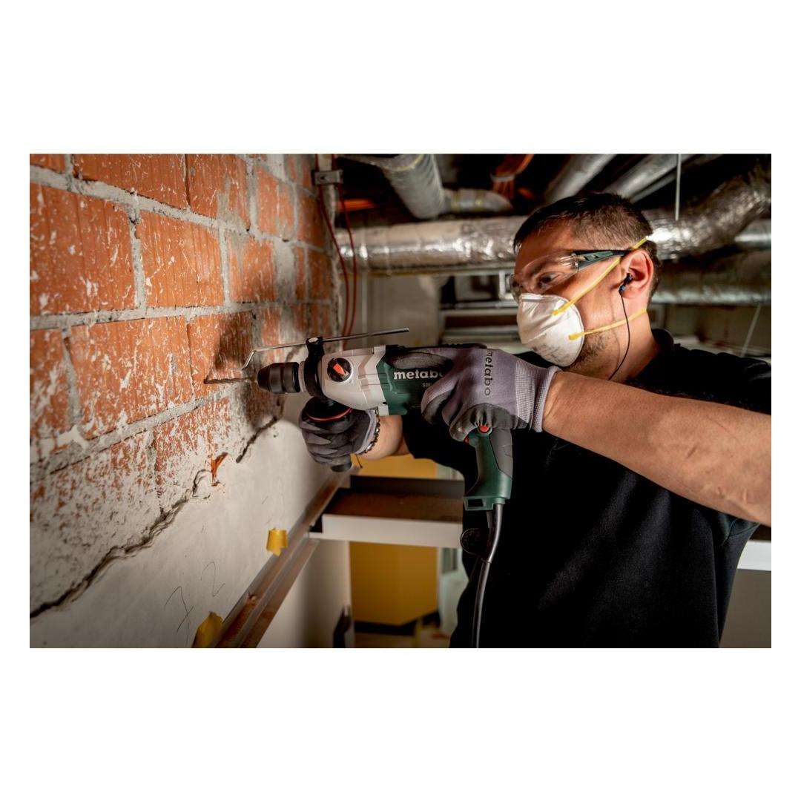
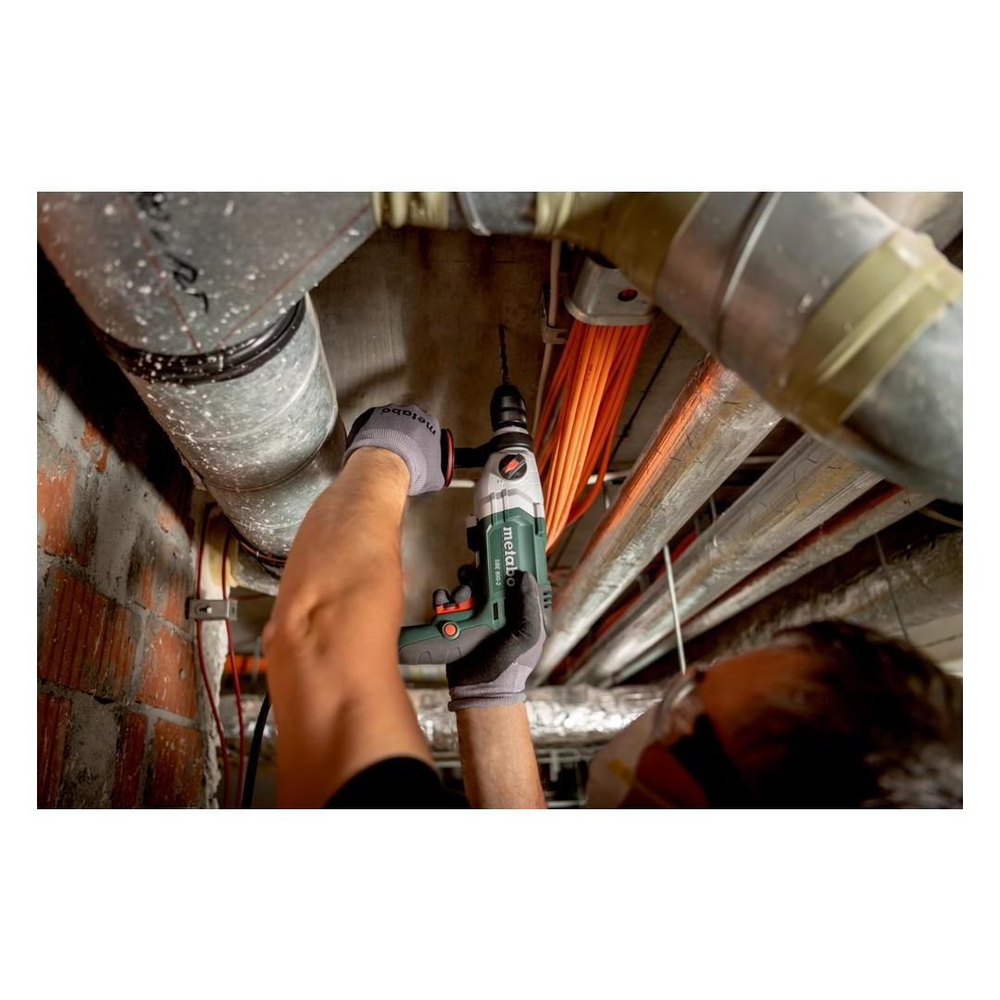
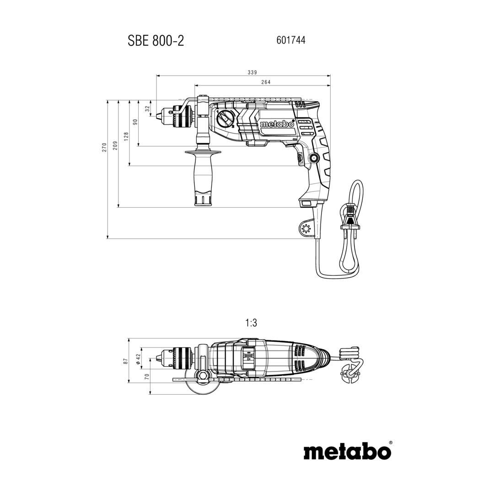
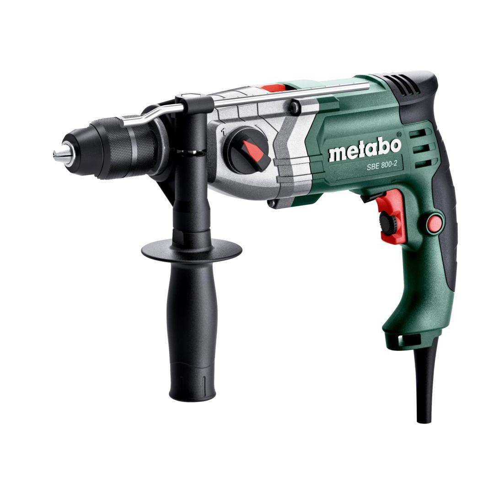

601744500




| Rated input power | 800 W |
| Maximum torque | 26 / 10 Nm // 19 / 7 ft. lbs |
| Drill-Ø masonry | 20 mm / 25/32 " |
| Drill-Ø concrete | 18 mm / 23/32 " |
| Drill Ø steel | 13 / 8 mm // 1/2 / 5/16 " |
| Drill-Ø soft wood | 40 / 25 mm // 1 9/16 / 1 " |
| No-load speed | 0 - 1200 / 0 - 3200 rpm |
mechanical decoupling of the drive for safe working should the tool stop unexpectedly
play video| Rated input power | 800 W |
| Maximum torque | 26 / 10 Nm // 19 / 7 ft. lbs |
| Drill-Ø masonry | 20 mm / 25/32 " |
| Drill-Ø concrete | 18 mm / 23/32 " |
| Drill Ø steel | 13 / 8 mm // 1/2 / 5/16 " |
| Drill-Ø soft wood | 40 / 25 mm // 1 9/16 / 1 " |
| No-load speed | 0 - 1200 / 0 - 3200 rpm |
| Speed at rated load | 850 / 2200 rpm |
| Maximum impact rate | 51200 bpm |
| Gears | 2 |
| Chuck capacity | 1.5 - 13 mm // 1/16 - 1/2 " |
| Collar diameter | 43 mm / 1 11/16 " |
| Drill spindle with hexagonal recess | 6.35 mm / 1/4 " |
| Drill spindle thread | 1/2 " - 20 UNF |
| Chuck clamping type | Keyless chuck |
| Weight (without power cable) | 2.3 kg |
| Cable length | 4.1 m |
| Drilling in metal | 2.9 m/s² |
| Uncertainty of measurement K | 1.5 m/s² |
| Impact drilling concrete | 23.7 m/s² |
| Uncertainty of measurement K | 1.5 m/s² |
| Sound pressure level | 108 dB(A) |
| Sound power level (LwA) | 116 dB(A) |
| Uncertainty of measurement K | 3 dB(A) |
| Futuro Plus keyless chuck |
| Side handle |
| Drilling depth guide |
| Plastic carry case |